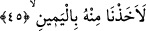

44. Eğer (Peygamber) bize atfen bâzı sözler uydurmuş olsaydı,
“Eğer o” şâirlerin uydurdukları gibi “bize atfen bâzı sözler uydurmuş olsaydı”; Hz.
Muhammed (s.a.) şâyet sizin iddiâ ettiğiniz gibi, bizim söylemediğimiz bir şeyi
söylediğimizi iddiâ etseydi... Nitekim bir başka âyette aynı anlama gelmek üzere şöyle
buyrulur: “Yahut «onu kendisi uydurdu!» mu diyorlar? Hayır onlar îman etmezler.”
(et-Tur, 52/33)
Âyette yer alan “ba’z/bâzı” kelimesi, -uydurulan sözlerin çoğu bir yana- azının bile
onun cezâlandırılmasına sebep olacağına işâret etmektedir. İftirâya “tekavvül” denmesi,
zorlanarak söylenen bir söz olmasından dolayıdır. Çünkü kelime zorlanma ve tekellüf
ifâde eden bir kalıpta ifâde edilmiştir. Keşşaf müellifi Zemahşerî’nin ifâde ettiğine
göre “tekavvül”, söz uydurmak demektir. Çünkü söz uydurmada, uyduran kişi açısından
bir tekellüf ve bir zorlama vardır. Uydurulmuş olan sözlere “ekavîl” denmesi, bu sözleri
tahkir ve aşağılamak içindir. Çünkü -Arapçada- “üf’ûle” kalıbı hakir şeylere ve tuhaf
nesnelere isim vermede kullanılır. Meselâ; insanın tuhaf karşılayacağı şeye, bu kalıp
kullanılarak “u’cûbe” denmiştir. Yine insana gülünç gelen şeylere aynı kalıpta “udhûke”
denilmesi de bundan dolayıdır. “Ekavîl” ukvûle kelimesinin çoğuludur. Bu da -her ne
kadar lugat açısından nakli sâbit değilse de- “kavl” kökünden türemedir. Ukvûle aslında
kullanılan bir ifâde biçimi değildir. Fakat kelimenin uf’ûle kalıbının çoğulu şeklinde
gelmesi, söylenen sözün hakir bir söz olduğunu ifâde etmek için yeterlidir. Nitekim bu
görüşü, “bu kelime akvâlin çoğulu değildir” açıklaması da destekler. Böyle olması “üç
söz”den daha aşağıda uydurulan sözlere cezâ verilmeyeceği sonucunu doğurmaz. Çünkü
burada “ekavîl” akvâl mânâsınadır; yoksa onun çoğulu anlamına değildir. İbnü’ş-
Şeyhin Havâşî’sinde yer aldığına göre akavîl, akvâl kelimesinin çoğuludur. Akvâl de
kavl kelimesinin çoğuludur. Tıpkı “en’âim” kelimesinin “en’âm”ın, “en’âm”ın da
“ni’am” kelimesinin çoğulu olması gibi.
45. Elbette onu kıskıvrak yakalardık.
Sa’dî Müftî’nin ifâdesine göre burası tıpkı “elem neşrah leke” ifâdesinde Allah nasıl
“biz senin göğsünü açıp genişletmedik mi?” (el-İnşirah, 94/1) buyururken önce icmal
olarak “sen” dedikten sonra ayrıntıya girip “göğsünü” buyurmuş ise burada da aynı
durum söz konusudur. Yâni önce “sağ taraf” icmalen söylenmiş sonra da tafsilata
girilerek “sağ kol” kasdedilmiştir.